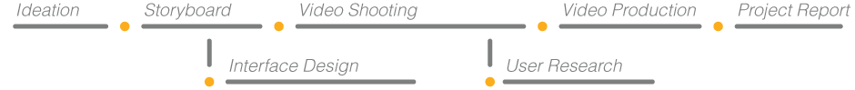

Stream is a system which captures happy moments automatically so you can put the camera away and enjoy the happiest moments of your life.
10 Weeks with Microsoft Instructor
Jeremy Friedland
, Mallika Simone, Willie Franklin, Ariana Zukowski, Enrique DominguezVideo Production, UI Design
Video Prototype, Modile Prototype, Final Presentation, Process Book
Stream inspires people to live vibrant and fulfilling lives by using peaks in happiness or Emotional Arousal as triggers for the capturing and documentation of memories. Two small transferable parts: a sensor that implements GSR, EDR, GPS and audio to detect these moments and a line of sight camera to capture them, create streams of content that can be viewed on any personal computing device.
By offering reflection and nostalgia of our happiest moments during down time, stream not only allows us to fully engage with these experiences in the moment, it prompts us to go forth into the world and create more memories, and likewise more content.
This project was created in response to the theme "Billions of Sensors" for the 2014 Microsoft Design Expo:
"What would you do with a billion sensors?"
As the final project of our prototyping studio, we have only one week to use the skills we learnt in class to prototype on a design concept and also perform a quick user test. As you can see in the timeline, as a team, we decided to focus on the hands-on activities and spend just enough time to find a interesting problem area that we want to tackle with.
